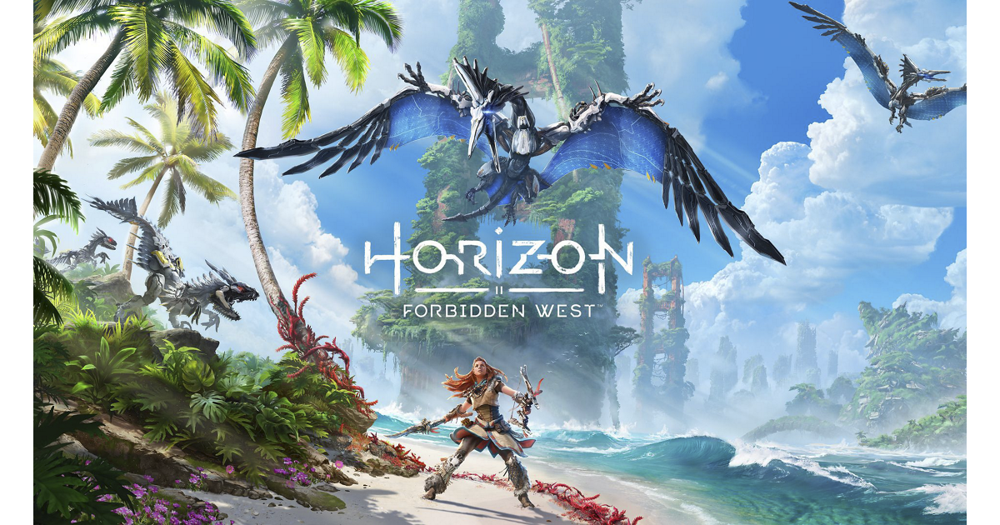

Teodor Faro ou Ted faro é dono da maior empresa em tecnologia, a Soluções Automatizadas Faro, ela temtava resolver os problemas em areas de guerras ou conflitos, ela estava em primeiro lugar no setor de tectonologia, desde seu aparelho foco, para todos lares, e até a linha de combate e seu robôs pacificadores que incerram conflitos.
Mas em outubro de 2064, Faro contatou Sobeck para obter ajuda em relação a uma unidade da linha principal de sua empresa de autômatos de combate Chariot que se tornaram desonestos. Projetados em torno do conceito de um enxame de robôs auto-replicantes com inteligência artificial, capazes de consumir qualquer matéria orgânica como combustível e com a capacidade de escravizar instantaneamente autômatos inimigos à sua própria rede neural, os robôs foram projetados para serem virtualmente impossíveis de serem detidos por todos mas seus proprietários. Além disso, Faro tinha o sistema operacional da linha Chariot protegido pelo padrão de protocolo Black Quartz usando Polyphasic Entangled Waveforms, um protocolo de criptografia virtualmente inquebrável, sem nada semelhante a um backdoor no software. No entanto, um enxame de propriedade de uma corporação conhecida como Hartz-Timor Energy Combine experimentou uma falha que fez com que os robôs ignorassem os códigos stand-down, atacassem o pessoal do Hartz-Timor e começassem a replicar além de sua taxa esperada. Faro tentou fazer com que seus programadores carregassem um service pack para restaurar o controle, apenas para ser lembrado de sua insistência nas medidas mencionadas que tornavam o Chariot OS virtualmente inquebrável e, portanto, impossível de recuperar o controle. Sem opção, Faro contatou Sobeck e pediu-lhe que fosse à Sede da FAS e o aconselhasse sobre o problema, oferecendo-lhe um ramo de oliveira ao desistir de todos os processos contra ela. Sobeck concordou e encontrou Faro em seu escritório no último andar do arranha-céu FAS em 31 de outubro de 2064. Desprezada de Faro por causa de sua ganância, irresponsabilidade e assédio, ela rejeitou suas tentativas de amizade, mas concordou em analisar o problema, sentindo pela atitude de Faro que a situação era grave.
Ciente de que qualquer tentativa de deter o enxame era inútil, Sobeck elaborou um plano com um objetivo totalmente diferente: não havia absolutamente nenhuma chance de deter o enxame antes que erradicasse a vida, mas havia uma chance de implementar um meio de fechá-lo e então restaurando a vida após sua erradicação. Ela planejou um sistema de terraformação global e totalmente automatizado que faria isso. Sendo totalmente automatizado, não exigiria nenhuma intervenção humana. Um supercomputador levaria 50 anos para quebrar apenas um dos conjuntos de códigos do enxame. Mas o sistema, ao contrário dos humanos, teria o tempo necessário para aplicar força bruta a todos os códigos, após o que os transmitiria, desligaria os robôs e então, nos próximos séculos, desintoxicaria a Terra, restauraria sua biosfera e então restaurar a espécie humana. Sobeck apelidou o plano de Projeto Zero Dawn. No entanto, houve desafios morais extremamente formidáveis. Para que houvesse tempo suficiente para implementar Zero Dawn, a condenada população humana global teria que se sacrificar em um esforço inútil para parar o enxame a fim de retardar seu avanço. O máximo sigilo seria, portanto, necessário para esconder a verdade e manter a luta da população global. Finalmente, o projeto exigiria as mentes mais brilhantes do planeta; devido ao sigilo envolvido, eles teriam de ser sequestrados de qualquer país em que residissem e teriam a opção de trabalhar no projeto. Se eles se recusassem, eles teriam que escolher entre ser detidos indefinidamente, sem nenhum contato com o mundo exterior, ou serem submetidos à eutanásia médica. [12] Por causa das implicações morais desses desafios, Faro estava relutante em assinar o Zero Dawn quando Sobeck o apresentou a ele 3 dias depois por meio de projeção holográfica. Mas Sobeck, que estava a caminho de se encontrar com o Estado-Maior Conjunto dos Estados Unidos e informá-los sobre o projeto, coagiu-o severamente com a ameaça de divulgar publicamente sua culpabilidade em causar o enxame.
O sacrifício de Sobeck salvou Zero Dawn e, conseqüentemente, salvou a vida na Terra da extinção permanente. Os tristes Alfas construíram um memorial para homenageá-la e ao seu trabalho na liderança da luta pela vida, como ela sempre fizera. No entanto, seu sacrifício também deixou os Alphas à mercê de um Ted Faro cada vez mais instável, que desenvolveu uma crença obsessiva de que o conhecimento de APOLLO era uma "doença" perigosa para o novo mundo. Sem Sobeck para contê-lo, essa obsessão se transformou em determinação. Ele excluiu APOLLO unilateralmente e matou os Alphas enquanto eles estavam reunidos na câmara de controle do GAIA Prime, ventilando a atmosfera da câmara, para evitar que APOLLO fosse reconstruído. Assim, todo o conhecimento da existência de Sobeck e do que ela fizera pela espécie humana e pela própria vida foi obliterado. Ainda assim, como a força motriz por trás do Zero Dawn, Sobeck salvou todas as vidas, incluindo a espécie humana, do esquecimento permanente. É ela a principal responsável pela desativação dos robôs da Peste de Faro e pelo restabelecimento da vida após a sua erradicação. Quando ela sacrificou sua vida para proteger GAIA Prime de ser atacada e destruída pelos robôs de Faro, Sobeck se tornou uma mártir pelo futuro da vida. [22] Quase um milênio depois, o GAIA foi afetado por um sinal de energia desconhecido que fez com que suas funções subordinadas se tornassem entidades autoconscientes que seguiram sua diretiva de programação sem a liderança do GAIA. Como tal, a função HADES procurou usar o sistema de terraformação para exterminar toda a vida na Terra, desta vez sem chance de restabelecimento. Para evitar isso, GAIA se destruiu para impedir HADES, que escapou e começou a conspirar para usar a praga de Faro adormecida, embora isso levasse tempo e exigisse a lealdade manipulada da Carja. Com mais urgência, sem o GAIA para gerenciar o sistema de terraformação, ele quebraria cada vez mais e colocaria em risco a vida mais uma vez, ambos os eventos ameaçaram desfazer todos os esforços de Elisabet. Antes de se destruir, porém, GAIA ordenou que uma das instalações do berço criasse um clone genético de Elisabet, que se chamaria Aloy, para que um dia ela pudesse acessar GAIA e reconstruí-la, após destruir HADES. Ironicamente, Aloy cresceu para ser exatamente o que Sobeck queria que seu filho fosse se ela tivesse um; curioso, obstinado e compassivo (em suas palavras: "Com compaixão suficiente para curar o mundo").
Sobeck foi uma cientista excepcionalmente inteligente e altruísta que dedicou sua vida para melhorar o mundo em que vivia. Com um amor intenso pela vida na Terra, seu desejo de fazer uma mudança positiva a induziu a usar seu formidável conhecimento em robótica e engenharia no busca de uma carreira no desenvolvimento de robôs que fossem ecologicamente corretos e ajudassem a servir as pessoas. Suas convicções a tornaram terminantemente contra o uso da tecnologia para aplicações militares, razão pela qual ela saiu da Faro Automated Solutions quando Faro decidiu mover a empresa para o mercado de tecnologia militar. Sobeck olhava com desprezo pessoas como Faro, que só se preocupava com a imagem pública e os lucros à custa da vida. Sobeck foi implacável em seus esforços para concluir o Projeto Zero Dawn e dar à vida uma chance de restabelecimento após sua erradicação. A enorme perda de vidas provocada pela Peste de Faro foi uma fonte de grande angústia para ela. Ela deu grande importância à empatia, percebendo que GAIA precisava ser capaz de emocionar e cuidar dos outros para cumprir seu papel. Acima de tudo, ela era altruísta e decidida, e sacrificou sua vida sem hesitar para salvar Zero Dawn e seus companheiros Alfas.
Os jogadores controlam a protagonista Aloy, uma caçadora de máquinas, enquanto viaja para uma América ocidental devastada por tempestades maciças e máquinas mortais. Foi anunciado no evento de revelação do PlayStation 5 em junho de 2020.O jogo apresenta um mundo aberto ambientado numa Califórnia pós-apocalíptica.[2][3] Os locais apresentados no trailer de anúncio do jogo incluem uma São Francisco em ruínas e Vale de Yosemite.
